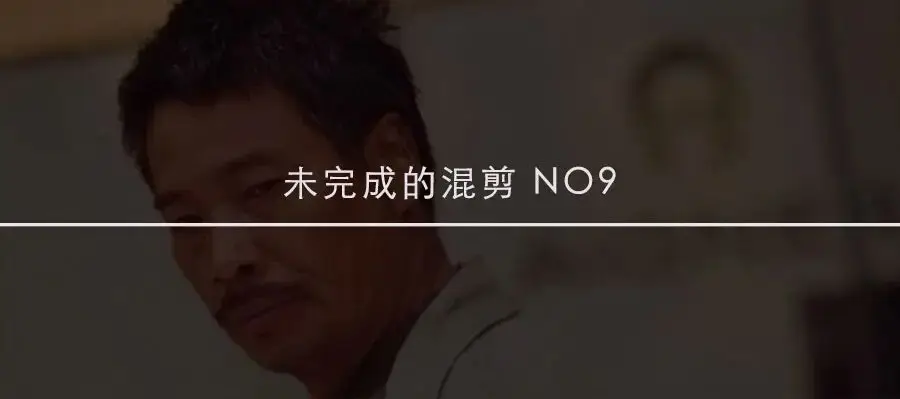
每个人都有这样的经历。
在某个时刻。
忽然，过去的记忆像潮水涌来。

曾经的事，曾经的人，曾经的幸福、失望和遗憾，一下子出现在我们的脑海中。
随着记忆的“潮水”褪去，我们的心也不禁变得空落落的。
有太多的美好是我们难以一直抓在手上的。
也有太多珍贵的人，一旦错过，便是永久的分离。
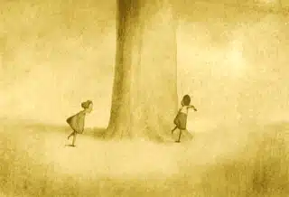
时间是最伟大的艺术家，时间会给予每一个人独一无二的回忆杀。
这次未完成的混剪，大虾带领大家一起领略光影世界里的回忆杀。
那个地方，凝聚着我们最为细腻、私密，最为浓烈、伤感的情感。
-06- 杀猪刀
生活不好也不坏。
有想要做的事情，但是也没有太多的心力去实践。
日子一天又一天。
生活，虽然浑浑噩噩，但也还凑凑活活。
终于，曾经的少年无缝对接成为油腻大叔。
保温杯泡枸杞，随口一个荤段子。
忽然，无意间瞧见自己年轻时的照片，不禁五味杂陈。
时间，真tm是个杀猪刀。
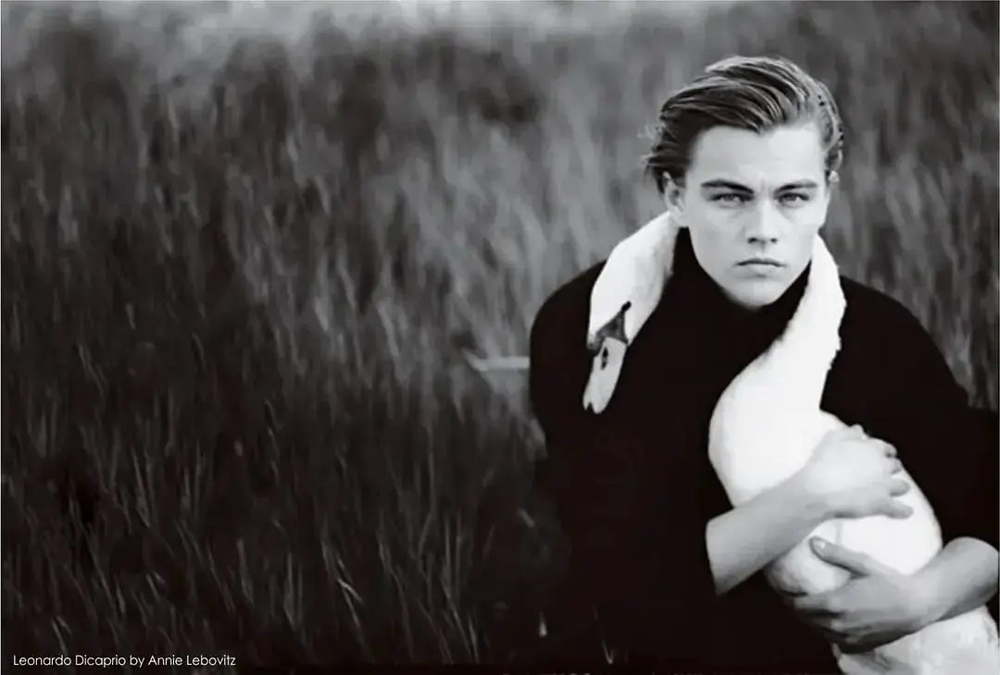
-05- 旧情复发
《倚天屠龙记》中，即使已经到了谈婚论嫁的地方，周芷若终究还是没能和张无忌在一起。
大婚当日，张无忌为了救义父，选择丢下周芷若，令她颜面尽失、伤心绝望。
因此，周芷若对张无忌因爱生恨，她难以拥有的东西也不允许赵敏拥有。
在群雄齐聚少林比武争夺金毛狮王时，已经暗中修炼九阴真经的周芷若誓要将张无忌置之死地。
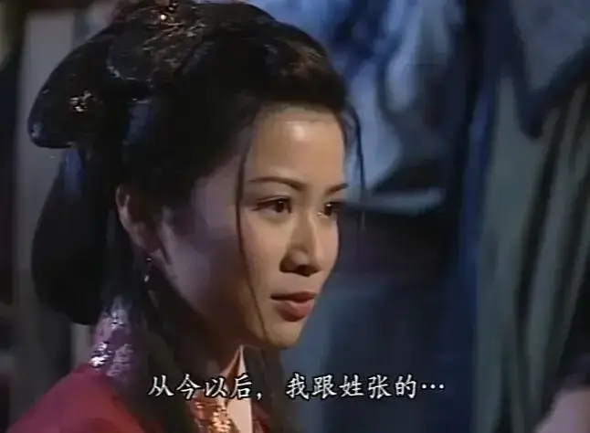
果然，张无忌念及旧情，对周芷若处处放水，终被周芷若打倒在地。
周芷若乘势一掌劈来，随时可以取张无忌性命。
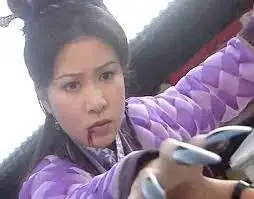
这时，周芷若看到张无忌胸口的剑伤，一下子陷入到回忆中。
当时六大派围攻光明顶，张无忌力挫群雄，无人能敌。
但张无忌却因为念及和周芷若的情谊最终反被周芷若重伤。
往日回忆历历在目，张无忌始终对她有情有义。
周芷若旧情复发、良心发现，最终放过了张无忌。
爱恨之间，记忆是一剂催化剂。
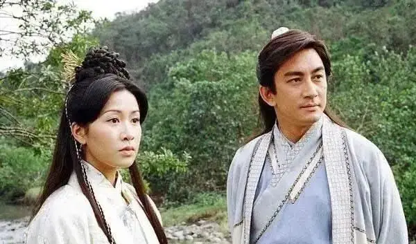
-04- 昔人已逝
一个孤独的老人，想尽一切办法，想要用气球带着自己的房子飞向天空。
这几乎是一个疯狂的计划。
但是老人义无反顾。
因为，这是已故妻子的梦想。
过去的回忆和遗憾，一遍又一遍，一次又一次地刺痛着老人的心。
在回忆中，老人对妻子的思念和爱变得越发浓烈，并最终成就了飞屋环游的奇迹。
-03-请记住我
当一个人去世的时候，并不是真正的死亡。
因为这个世界上，还有很多人记得你，还会提起你。
真正的死亡是世界上没有一个人记住你。
《寻梦环游记》里的埃克特就面临这样的危机。
他喜欢音乐，却意外去世，家人以为是埃克特为了音乐抛弃了家人。
从此，埃克特成为了家族中被大家唾弃和遗忘的人。
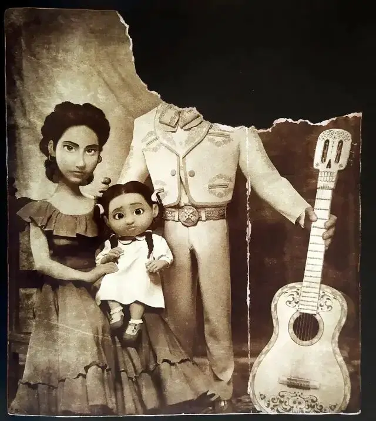
可埃克特在亡灵世界里却在无比思念着自己的女儿coco。
在墨西哥的亡灵节里，如果在世的亲人还记得你，你便不会彻底死亡，并且有机会和家人团聚。
多年以后，小女孩coco已经成为了家族中最年长的一位，她是最后记得自己父亲埃克特的人。
coco一旦忘记父亲，埃克特便再无机会见到自己的女儿。
coco的祖孙米格尔无意间闯入亡灵世界，得知了埃克特的真相。
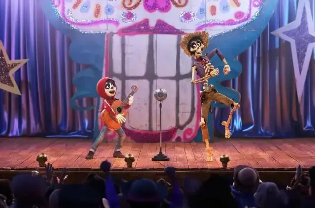
电影最后，小男孩回到现实世界拼命地摇晃自己的太奶奶coco，想要叫醒她，这样埃克特便可以见女儿最后一面。
可是coco太老了，随时会走向死亡。
最终，小男孩弹起埃克特弹奏给COCO的 “请记住我”。
奇迹的是，coco渐渐醒了，喃喃的附和着，嘴里说着‘爸爸，爸爸’。
这就是记忆的价值。
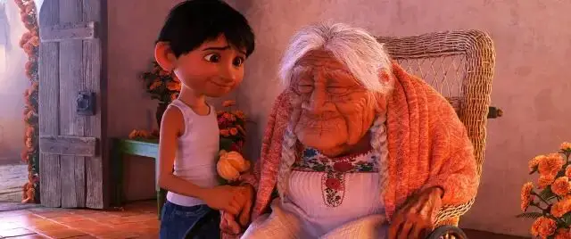
-02- 后悔莫及
《大话西游》中至尊宝和紫霞的爱情是一个令人痛心的悲剧。
当紫霞不顾一切地爱上至尊宝的时候，至尊宝却将紫霞一把推开。
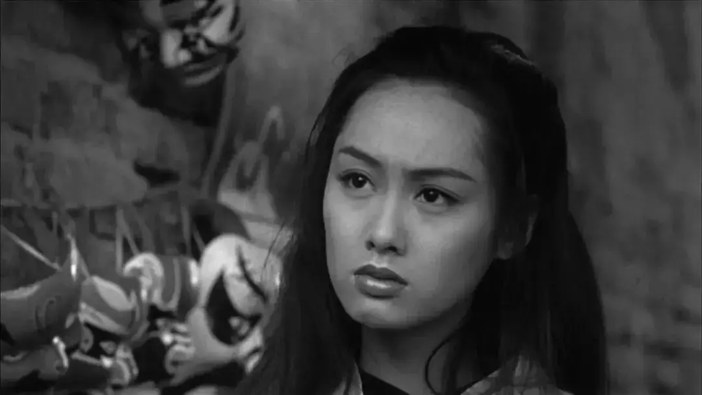
而当至尊宝最终发现紫霞才是自己一生所爱的时候，他已经变身为不能动情的孙悟空。
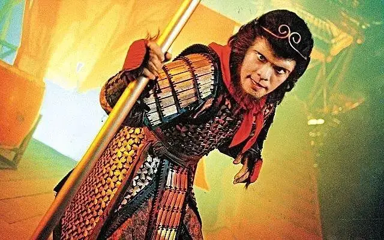
穿越五百年寻找心爱之人，却经历了刻苦铭心的失去。
这是令人多么痛心的爱情。
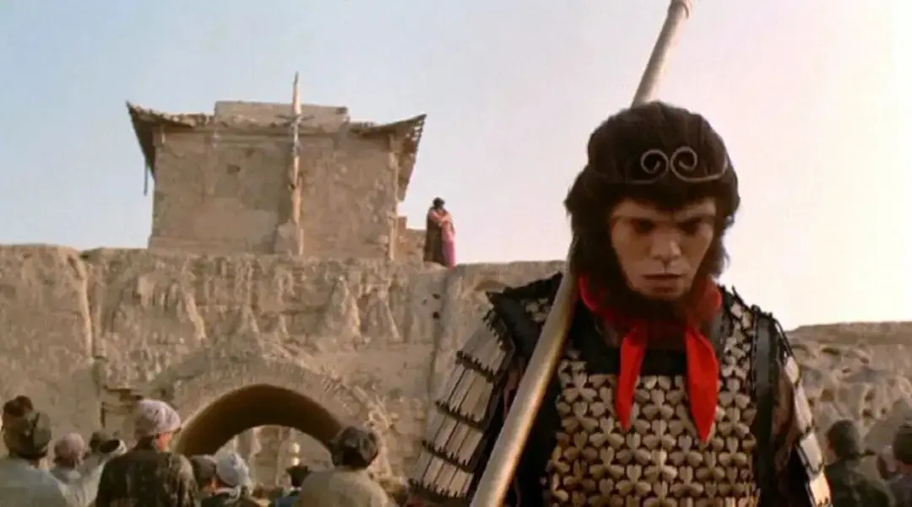
而至尊宝变身为齐天大圣时的那段话，写出了无数人心中的悔恨和无奈：
“曾经有一份真诚的爱情放在我面前，我没有珍惜，等我失去的时候我才后悔莫及，人世间最痛苦的事莫过于此。
如果上天能够给我一个再来一次的机会，我会对那个女孩子说三个字:我爱你。如果非要在这份爱上加上一个期限，我希望是……一万年!”
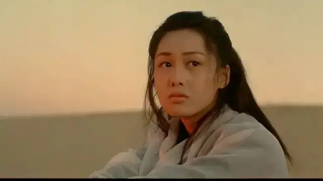
-01- 集体之殇
回忆杀，是一个很个人化的体验。
但是回忆杀并不专属于个人，也可以因为共同的记忆而出现在集体中。
今天，吴孟达去世，便是我们一起的回忆杀。
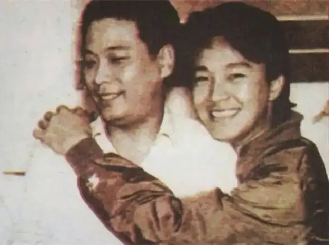
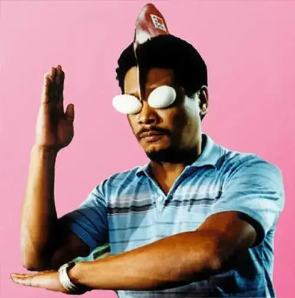
星爷头发已经花白，如今达叔也已经逝去。
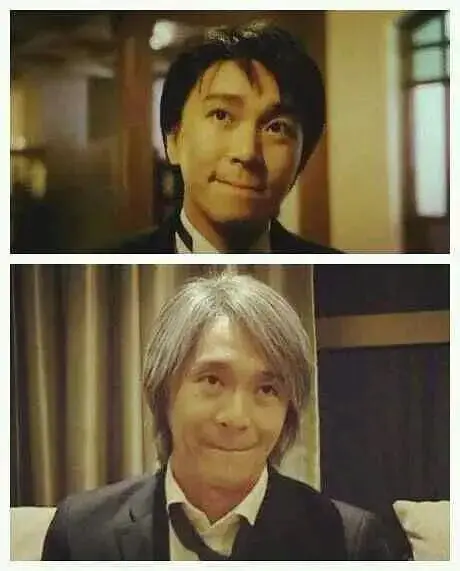
我们心心念念，希望有生之年在大屏幕上看到星爷和吴孟达再次合作的梦想终成遗憾。
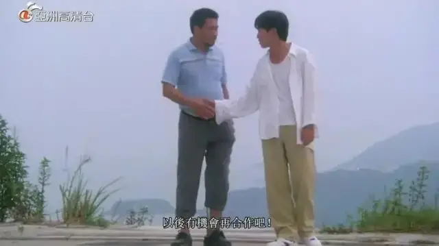
达叔，再见！
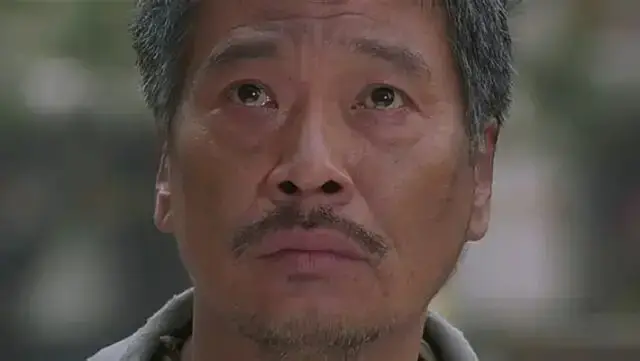
在我心目中，你早已经是奥斯卡影帝。
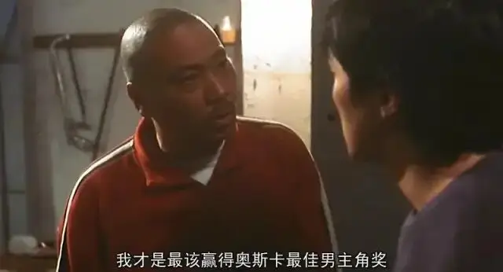
相似推荐
▼
已完成的混剪no 1
已完成的混剪no 2
已完成的混剪no 3
未完成的混剪no 1
未完成的混剪no 2
未完成的混剪no 3
未完成的混剪no 4
未完成的混剪no 5
未完成的混剪no 6
未完成的混剪no 7
未完成的混剪no 8
这里没有挑逗你眼目情欲的小鲜肉
也没有挑动你肉体情欲的段子
更没有膨胀你今生骄傲的鸡血
我们只在乎那些最质朴真诚的作品
在那里我们才能恢复真正的想象力
我们也坚信这才是我们真正需要的

ID:Six_hundred_hits
长按二维码，一键关注
【六百击】
电影评论
尽情分享朋友圈

微信二维码打赏通道